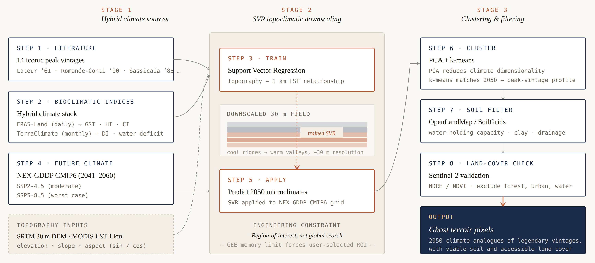

01The question
The narrow climatic envelopes that produce premium wine are shifting. Bordeaux and Napa are already at or near the upper bound of their growing-season temperature; published projections place the ideal 12–22 °C growing-season isotherm 150–300 km poleward and several hundred metres higher in elevation by mid-century. The investment question that follows is concrete: where, exactly, will the climate that produced a 1961 Château Latour or a 1990 Domaine de la Romanée-Conti exist in 2050?
The Terroir Prediction Engine is an attempt to answer that question with public satellite data, in a tool anyone can use in a browser.

02Iconic vintages as benchmarks
The app is grounded on fourteen iconic vintages, drawn from a synthesis of critical consensus (Wine Advocate, Wine Spectator, JancisRobinson) and academic work on the climate-quality relationship (Jones, 2005; Jones, 2006). Each vintage anchors a precise climatic signature — not a 30-year average, but the specific weather of the year that produced the legendary wine. Searching for averages risks finding land where the new normal is perfect but the new extremes will cook the grapes; searching for the exact peak-vintage signature is the more rigorous formulation.
The set spans Bordeaux (Latour 1961, Margaux 1982, Haut-Brion 1989), Burgundy (Romanée-Conti 1990, Rousseau 2005), Tuscany (Sassicaia 1985), Piedmont (Gaja 1990), Napa (Screaming Eagle 1997, Ridge 1991), Mosel (J. J. Prüm 2001), Champagne (Krug Clos du Mesnil 1996), Ribera del Duero (Vega Sicilia Unico 1970), Mendoza (Catena Zapata 2019), and the Barossa (Penfolds Grange 1990).
03The workflow
Step 1 — Bioclimatic indices from a hybrid dataset
The Tonietto & Carbonneau Multicriteria Climatic Classification (MCC) requires daily-resolution temperature data — TerraClimate is monthly and would smooth out exactly the heat spikes and cool nights that distinguish a peak vintage. The app uses a hybrid approach: ERA5-Land Daily Aggregated for the thermal indices (Growing Season Temperature, Huglin Heliothermal Index, Cool Night Index) and TerraClimate for the hydrological component (Dryness Index, climatic water deficit). The Southern Hemisphere has its own logic — a 1990 Penfolds Grange harvest started its growing season in October 1989, not 1990, and the function offsets the year accordingly.
Step 2 — Topoclimatic downscaling with SVR
Global climate models operate at 9–25 km resolution. A vineyard slope is microclimatic. To bridge the gap, the app trains a Support Vector Regression model that learns the relationship between SRTM-derived topography (elevation, slope, north-south aspect, east-west aspect) and MODIS Land Surface Temperature at 1 km, then applies the learned relationship at 30 m DEM resolution. Aspect is encoded with sine and cosine to avoid the 0°/360° discontinuity that would confuse a linear model.
Memory management matters here: SVR is computationally heavy, and naive global training crashes Earth Engine. The app trains within a user-selectable region of interest and samples training data at the resolution of the dependent variable, not the predictor — a deliberate engineering decision rather than an accident.
Step 3 — Future climate analogues via PCA + k-means
NASA NEX-GDDP CMIP6 projections give the 2041–2060 search space, in two emission scenarios so the user can choose between moderate (SSP2-4.5) and worst-case (SSP5-8.5) risk profiles. Principal Component Analysis reduces the climate-variable dimensionality; k-means clustering with Euclidean distance identifies the 2050 pixels whose downscaled climate signatures match the historical peak-vintage anchor.
Step 4 — Soil and current-land-cover filters
Climate match is necessary but not sufficient. A final filter checks soil water-holding capacity (OpenLandMap / SoilGrids) — terroir is heavily governed by the soil's regulation of water and nitrogen — and Sentinel-2 (NDRE, NDVI) classifies the current land cover. A "Ghost Terroir" pixel that turns out to be a protected rainforest or an existing dense urban area is correctly excluded.

04Engineering decisions worth flagging
Region-of-interest, not global search
An early version tried to run global k-means clustering on the downscaled grid; Earth Engine timed out. The fix was a UI redesign: the user picks a target zone (Southern England, Tasmania, British Columbia) before the cluster engine runs. The decision moved the app from "interesting but unrunnable" to "interactive and fast," at the cost of one user-interaction step.
Scale-factor bug on water deficit
An early run reported a 3,467 mm water deficit over a Bordeaux growing season — a Sahara-desert number. TerraClimate's def band stores values with a 0.1 scale factor; multiplying by 0.1 gave the correct 346.7 mm deficit, consistent with a dry Bordeaux summer. A small bug on a single line, but a useful reminder that EO data products encode their own conventions and reading the dataset documentation matters as much as the code.
05Try it
The app is live and free to use:
Launch the Terroir Prediction Engine →
06Why this is on a space-engineering portfolio
The work sits at the boundary the European space community has been deliberately moving toward for a decade — downstream EO services, climate-adaptation tools, and applications that turn satellite data into decisions for real industries. Wine is a useful test case: a $400 billion global market, deeply tied to specific geographies, and one of the cleanest natural experiments in climate change because peak vintages are tightly recorded across centuries. The technical work is transferable to any application where a user needs to find the climate analogues of a known historical condition — agricultural transitions, ecological restoration, infrastructure siting.
07Limitations & next steps
The current model treats climate as the dominant variable and applies soil and land-cover as filters; in reality, viticultural decisions also depend on legal frameworks (appellation rules), water rights, labour markets, and infrastructure. A version 2 would integrate at least a labour-cost and water-rights overlay. The CMIP6 projections come with their own ensemble spread, and the app currently exposes only the median; a useful upgrade would surface the inter-model uncertainty so the investor can see the disagreement, not just the central estimate.